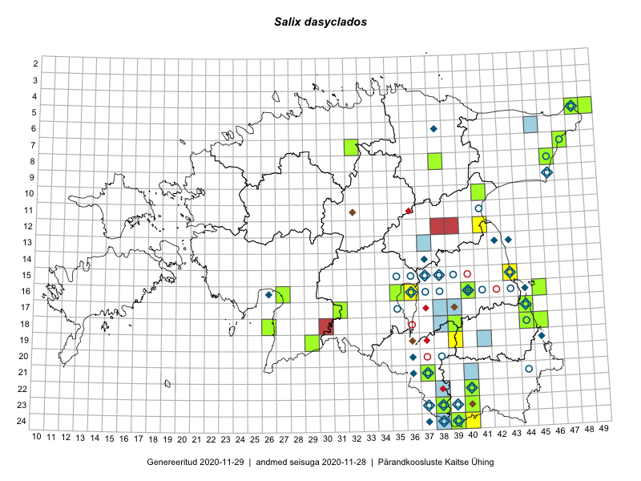

Salix dasyclados — pikalehine paju
Salicaceae :: Salix dasyclados Wimm. (240)

Kaart põhineb 269 kirjel:
vaatlusi 35
herbaareksemplare 205
PKÜ kirjeid1 13
ELFi kirjeid2 13
LVA kirjeid3 3
Taime kaasaegsed ja ajaloolised leiukohad asuvad 68 ruudus.
Tingmärgid ja leidudega ruutude arvud periooditi uues (u) ja 2005 andmestikus (v)
| █ | vahemik | u4 | v5 |
|---|---|---|---|
| █ | 2006–2020 | 40 | – |
| ◆/◇ | 1971–2005 | 29 | 27 |
| ○ | 1921–1970 | 29 | 12 |
| + | kuni 1920 | 1 | 0 |
| × | hävinud | – | 0 |
| ? | kaheldav | – | 0 |
| Ruut | Leidja(d) | Leiuaeg | Kirje |
|---|---|---|---|
| 16-36 | Peedu Saar | 2020-08-17 | ruut/ala: Salix dasyclados Wimm. |
| 16-35 | Peedu Saar | 2020-08-10 | TAA0153539: Salix dasyclados Wimm. |
| 16-35 | Peedu Saar | 2020-08-10 | TAA0153540: Salix dasyclados Wimm. |
| 15-43 | Peedu Saar | 2020-08-08 | ruut/ala: Salix dasyclados Wimm. |
| 12-39 | Janne Haljak | 2020-06-01 | LVA: 610295686 |
| 05-48 | Peedu Saar, Toomas Kukk | 2019-09-12 | TAA0149700: Salix dasyclados Wimm. |
| 22-40 | Toomas Kukk, Indrek Tammekänd | 2019-07-11 | TAA0153226: Salix dasyclados Wimm. |
| 10-41 | Peedu Saar, Ott Luuk | 2019-07-04 | TAA0149672: Salix dasyclados Wimm. |
| 10-41 | Peedu Saar, Ott Luuk | 2019-07-04 | TAA0149673: Salix dasyclados Wimm. |
| 16-45 | Ott Luuk | 2019-06-07 | TAA0150285: Salix dasyclados Wimm. |
| 16-45 | Ott Luuk | 2019-06-07 | TAA0150286: Salix dasyclados Wimm. |
| 18-30 | Liisa Rennel | 2018-07-13 | LVA: -880386190 |
| 16-27 | Indrek Tammekänd | 2017-09-30 | TAA0143701: Salix dasyclados Wimm. |
| 17-31 | Toomas Kukk | 2017-08-29 | TAA0141857: Salix dasyclados Wimm. |
| 17-31 | Toomas Kukk | 2017-08-29 | TAA0141858: Salix dasyclados Wimm. |
| 12-41 | Peedu Saar, Ott Luuk | 2017-08-23 | punkt: Salix dasyclados Wimm. |
| 12-41 | Ott Luuk, Peedu Saar | 2017-08-23 | ruut/ala: Salix dasyclados Wimm. |
| 08-38 | Peedu Saar, Ott Luuk | 2017-07-18 | TAA0141133: Salix dasyclados Wimm. |
| 08-38 | Peedu Saar, Ott Luuk | 2017-07-18 | TAA0141134: Salix dasyclados Wimm. |
| 16-40 | Peedu Saar | 2017-07-10 | TAA0141132: Salix dasyclados Wimm. |
| 07-32 | Peedu Saar, Ott Luuk | 2016-09-28 | TAA0133978: Salix dasyclados Wimm. |
| 17-44 | Peedu Saar | 2016-08-24 | TAA0133981: Salix dasyclados Wimm. |
| 18-26 | Meeli Mesipuu, Timo Luhamäe | 2016-07-18 | TAA0145279: Salix dasyclados Wimm. |
| 18-44 | Liina Oja, Maret Gerz | 2016-07-17 | punkt: Salix dasyclados Wimm. |
| 19-29 | Toomas Kukk, Tiit Hallikma | 2016-06-24 | TAA0139624: Salix dasyclados Wimm. |
| 19-29 | Toomas Kukk, Hannes Pehlak | 2016-06-24 | TAA0139625: Salix dasyclados Wimm. |
| 18-45 | Toomas Kukk, Tiit Hallikma | 2016-06-17 | ruut/ala: Salix dasyclados Wimm. |
| 18-45 | Toomas Kukk, Tiit Hallikma | 2016-06-17 | TAA0135959: Salix dasyclados Wimm. |
| 18-45 | Toomas Kukk, Tiit Hallikma | 2016-06-17 | TAA0135960: Salix dasyclados Wimm. |
| 18-44 | Maret Gerz, Liina Oja | 2016-06-17 | TAA0133761: Salix dasyclados Wimm. |
| 18-44 | Maret Gerz, Liina Oja | 2016-06-17 | TAA0133765: Salix dasyclados Wimm. |
| 23-38 | Rein Kalamees, Eerik Leibak | 2016-06-16 | ruut/ala: Salix dasyclados Wimm. |
| 23-38 | Eerik Leibak, Rein Kalamees | 2016-06-16 | TAA0138440: Salix dasyclados Wimm. |
| 23-40 | Ott Luuk | 2016-06-14 | TAA0138962: Salix dasyclados Wimm. |
| 24-39 | Maret Gerz, Liina Oja | 2016-06-14 | TAA0133756: Salix dasyclados Wimm. |
| 24-39 | Liina Oja, Maret Gerz | 2016-06-14 | punkt: Salix dasyclados Wimm. |
| 18-39 | Peedu Saar, Tarmo Niitla | 2016-06-13 | TAA0133993: Salix dasyclados Wimm. |
| 16-40 | Ülo Niinemets | 2016-05-01 | TAA0144945: Salix dasyclados Wimm. |
| 12-38 | Enn Selgis | 2015-08-25 | LVA: 192559746 |
| 24-40 | Eeva-Maria Jeletsky, Tarmo Niitla | 2015-07-25 | ruut/ala: Salix dasyclados Wimm. |
| 08-46 | Thea Kull, Eerik Leibak | 2015-07-23 | TAA0113674: Salix dasyclados Wimm. |
| 05-49 | Toomas Kukk, Tiit Hallikma | 2015-07-22 | TAA0135458: Salix dasyclados Wimm. |
| 05-49 | Toomas Kukk, Tiit Hallikma | 2015-07-22 | TAA0135459: Salix dasyclados Wimm. |
| 19-39 | Malle Leht | 2015-07-08 | ruut/ala: Salix dasyclados Wimm. |
| 18-45 | Peedu Saar | 2015-07-04 | punkt: Salix dasyclados Wimm. |
| 18-45 | Peedu Saar | 2015-07-04 | ruut/ala: Salix dasyclados Wimm. |
| 18-44 | Peedu Saar | 2015-07-04 | TAA0116616: Salix dasyclados Wimm. |
| 21-37 | Silvia Pihu | 2015-06-28 | ruut/ala: Salix dasyclados Wimm. |
| 21-37 | Silvia Pihu | 2015-06-28 | punkt: Salix dasyclados Wimm. |
| 21-37 | Silvia Pihu | 2015-06-28 | TAA0134872: Salix dasyclados Wimm. |
| 07-47 | Peedu Saar, Sander Laherand | 2015-05-31 | TAA0116629: Salix dasyclados Wimm. |
| 17-38 | Peedu Saar | 2012-07-25 | ELF: 23201 |
| 18-38 | Peedu Saar | 2012-07-25 | ELF: 23199 |
| 17-39 | Peedu Saar | 2012-06-07 | ELF: 2447 |
| 21-40 | Kai Koppel | 2010-06-25 | ELF: 14375 |
| 21-40 | Kai Koppel | 2010-06-25 | ELF: 14376 |
| 06-45 | Triin Tekko, Anne Palm | 2010-06-19 | ELF: 15407 |
| 22-38 | Karin Kikas | 2009-10-11 | ELF: 13681 |
| 22-38 | Karin Kikas, Martti Rohusaar | 2009-10-07 | ELF: 10088 |
| 13-37 | Reeli Hansen, Raili Hansen | 2009-08-14 | ELF: 11030 |
| 19-41 | Kai Koppel | 2009-06-28 | ELF: 11357 |
| 24-38 | Eerik Leibak | 2007-07-09 | ELF: 9776 |
| 11-32 | Silvia Sepp, Raul Pihu | 2002-06-09 | PKÜ: 9780 |
| 16-40 | Toomas Kukk | 2001-08-09 | TAA0143853: Salix dasyclados Wimm. |
| 19-36 | Ülle Reier, Erki Uustalu | 2000-09-08 | PKÜ: 6931 |
| 23-38;24-38;24-39 | Eerik Leibak, Pille Tomson | 2000-09-02 | PKÜ: 5540 |
| 23-38 | Eerik Leibak, Pille Tomson | 2000-09-02 | PKÜ: 5541 |
| 23-38;24-37;24-38 | Eerik Leibak, Pille Tomson | 2000-09-01 | PKÜ: 5555 |
| 23-38;24-38 | Eerik Leibak, Pille Tomson | 2000-09-01 | PKÜ: 5536 |
| 24-37 | Eerik Leibak, Pille Tomson | 2000-08-31 | PKÜ: 5552 |
| 23-39 | Ülle Reier, Bert Holm | 2000-08-17 | PKÜ: 6791 |
| 22-40 | Ülle Reier, Bert Holm | 2000-08-17 | PKÜ: 6790 |
| 22-40 | Ülle Reier, Bert Holm | 2000-08-17 | PKÜ: 6789 |
| 23-39;23-40 | Ülle Reier, Bert Holm | 2000-08-17 | PKÜ: 6783 |
| 23-40 | Ülle Reier, Bert Holm | 2000-08-16 | PKÜ: 6793 |
| 16-40 | Mare Leis, Katrin Heinsoo | 2000-08-06 | PKÜ: 4057 |
| 17-39 | Nele Ingerpuu, Ülle Püttsepp | 1997-07-16 | ELF: 696 |
| 14-37 | 1996–1997 | ruut/ala: Salix dasyclados Wimm. | |
| 15-37 | 1996–1997 | ruut/ala: Salix dasyclados Wimm. | |
| 23-38 | Heljo Krall, Ülle Püttsepp, Lauri Lutsar | 1995-10-08 | ELF: 1513 |
| 13-43 | Heljo Krall | 1995-08-08 | TAA0098702: Salix dasyclados Wimm. |
| 13-43 | Heljo Krall | 1995-08-08 | TAA0098703: Salix dasyclados Wimm. |
| 06-38 | M. Nelke | 1992-08 | TU268411: Salix dasyclados Wimm. |
| 15-43 | Heljo Krall, Nele Ingerpuu | 1986-09-10 | ruut/ala: Salix dasyclados Wimm. |
| 23-39 | M. Leht, T. Nurmela | 1986-06-09 | ruut/ala: Salix dasyclados Wimm. |
| 22-40 | H. Krall, K. Kihno | 1986-06-09 | ruut/ala: Salix dasyclados Wimm. |
| 15-38 | Ülo Niinemets | 1985–1986 | ruut/ala: Salix dasyclados Wimm. |
| 19-45 | Ülo Niinemets | 1985–1986 | ruut/ala: Salix dasyclados Wimm. |
| 13-42 | E. Krall | 1984-08-10–1984-08-22 | ruut/ala: Salix dasyclados Wimm. |
| 16-36 | Heljo Krall | 1984-08-05 | ruut/ala: Salix dasyclados Wimm. |
| 17-44 | Vilma Kuusk, Malle Leht, Maria Abakumova | 1983-08-02 | ruut/ala: Salix dasyclados Wimm. |
| 16-44 | Heljo Krall, Linda Viljasoo | 1983-08-02 | ruut/ala: Salix dasyclados Wimm. |
| 21-36 | E. Krall, Heljo Krall | 1983-07-26 | ruut/ala: Salix dasyclados Wimm. |
| 21-37 | Heljo Krall, E. Krall | 1983-07-24–1983-07-25 | ruut/ala: Salix dasyclados Wimm. |
| 20-36 | Linda Viljasoo | 1983-06-17 | TAA0098674: Salix dasyclados Wimm. |
| 05-48 | Maret Kask, Vilma Kuusk, Heljo Krall, Malle Leht, Linda Viljasoo, Liivia Laasimer | 1982-07-10 | ruut/ala: Salix dasyclados Wimm. |
| 09-46 | Heljo Krall, Malle Leht | 1981-09-07 | ruut/ala: Salix dasyclados Wimm. |
| 23-39 | H. Krall, L. Laasimer, L. Viljasoo | 1981-06-19 | ruut/ala: Salix dasyclados Wimm. |
| 16-26 | L. Viljasoo | 1979-08-02 | ruut/ala: Salix dasyclados Wimm. |
| 05-48 | Linda Viljasoo | 1972-08-15 | TAA0143843: Salix dasyclados Wimm. |
| 24-39 | Linda Viljasoo | 1971-08-13 | TAA0098695: Salix dasyclados Wimm. |
| 23-37 | M. Kask, L. Viljasoo | 1971-08 | ruut/ala: Salix dasyclados Wimm. |
| 24-37 | H. Krall | 1971-07-24 | TAA0143842: Salix dasyclados Wimm. |
| 05-48 | Maret Kask, Linda Viljasoo | 1971–1973 | ruut/ala: Salix dasyclados Wimm. |
| 08-46 | M. Kask, Vilma Kuusk | 1967-07-30 | TAA0098675: Salix dasyclados Wimm. |
| 23-37 | Õie Jaagomäe | 1965-08-09 | TAM0027425: Salix dasyclados Wimm. |
| 15-35 | Linda Viljasoo | 1965-06-28 | TAA0143844: Salix dasyclados Wimm. |
| 15-35 | Linda Viljasoo | 1965-06-28 | TAA0143845: Salix dasyclados Wimm. |
| 16-43 | Linda Viljasoo | 1964-09-27 | TAA0098682: Salix dasyclados Wimm. |
| 16-43 | Linda Viljasoo | 1964-09-27 | TAA0098683: Salix dasyclados Wimm. |
| 15-43 | Linda Viljasoo | 1964-07-31 | TAA0144501: Salix dasyclados Wimm. |
| 07-47 | Linda Viljasoo | 1964-07-28 | TAA0098694: Salix dasyclados Wimm. |
| 07-47 | Linda Viljasoo | 1964-07-28 | TAA0144513: Salix dasyclados Wimm. |
| 07-47 | Linda Viljasoo | 1964-07-28 | TAA0144514: Salix dasyclados Wimm. |
| 05-48 | Linda Viljasoo | 1964-07-28 | TAA0143846: Salix dasyclados Wimm. |
| 05-48 | Heljo Krall | 1964-07-28 | TAA0098689: Salix dasyclados Wimm. |
| 05-48 | Heljo Krall | 1964-07-28 | TAA0098690: Salix dasyclados Wimm. |
| 05-48 | Heljo Krall | 1964-07-28 | TAA0144502: Salix dasyclados Wimm. |
| 05-48 | Heljo Krall | 1964-07-28 | TAA0144503: Salix dasyclados Wimm. |
| 05-48 | Heljo Krall | 1964-07-28 | TAA0144511: Salix dasyclados Wimm. |
| 05-48 | Heljo Krall | 1964-07-28 | TAA0144512: Salix dasyclados Wimm. |
| 05-48 | Heljo Krall | 1964-07-28 | TAA0144527: Salix dasyclados Wimm. |
| 05-48 | Heljo Krall | 1964-07-28 | TAA0144528: Salix dasyclados Wimm. |
| 05-48 | H. Krall, E. Lellep | 1964-07-28 | TAA0144535: Salix dasyclados Wimm. |
| 05-48 | H. Krall, E. Lellep | 1964-07-28 | TAA0144536: Salix dasyclados Wimm. |
| 24-38 | Vilma Kuusk | 1964-07-24 | TAA0143848: Salix dasyclados Wimm. |
| 24-38 | Vilma Kuusk | 1964-07-24 | TAA0143849: Salix dasyclados Wimm. |
| 24-38 | Vilma Kuusk | 1964-07-24 | TAA0143850: Salix dasyclados Wimm. |
| 23-37 | Linda Viljasoo | 1964-07-24 | TAA0098691: Salix dasyclados Wimm. |
| 24-38 | Linda Viljasoo | 1964-07-24 | TAA0143851: Salix dasyclados Wimm. |
| 24-38 | Linda Viljasoo | 1964-07-24 | TAA0143852: Salix dasyclados Wimm. |
| 16-41 | Linda Viljasoo | 1964-07-23 | TAA0098686: Salix dasyclados Wimm. |
| 16-41 | Linda Viljasoo | 1964-07-23 | TAA0098687: Salix dasyclados Wimm. |
| 16-41 | Agnes Ojaveer | 1964-07-23 | TAA0098696: Salix dasyclados Wimm. |
| 16-41 | Agnes Ojaveer | 1964-07-23 | TAA0098697: Salix dasyclados Wimm. |
| 16-36 | Linda Viljasoo | 1963-09-19 | TAA0098692: Salix dasyclados Wimm. |
| 16-36 | Linda Viljasoo | 1963-09-19 | TAA0098693: Salix dasyclados Wimm. |
| 15-36 | Linda Viljasoo | 1963-09-19 | TAA0098698: Salix dasyclados Wimm. |
| 17-35 | Linda Viljasoo | 1963-09-19 | TAA0144507: Salix dasyclados Wimm. |
| 17-35 | Linda Viljasoo | 1963-09-19 | TAA0144508: Salix dasyclados Wimm. |
| 15-37 | Linda Viljasoo | 1963-09-19 | TAA0144515: Salix dasyclados Wimm. |
| 15-38 | Linda Viljasoo | 1963-09-19 | TAA0144518: Salix dasyclados Wimm. |
| 15-38 | Linda Viljasoo | 1963-09-19 | TAA0144519: Salix dasyclados Wimm. |
| 15-38 | Linda Viljasoo | 1963-09-19 | TAA0144520: Salix dasyclados Wimm. |
| 15-38 | Linda Viljasoo | 1963-09-19 | TAA0144521: Salix dasyclados Wimm. |
| 15-37 | Linda Viljasoo | 1963-09-19 | TAA0143858: Salix dasyclados Wimm. |
| 16-36 | Linda Viljasoo | 1963-09-19 | TAA0143859: Salix dasyclados Wimm. |
| 16-36 | Linda Viljasoo | 1963-09-19 | TAA0143860: Salix dasyclados Wimm. |
| 15-38 | Linda Viljasoo | 1963-09-19 | TAA0143861: Salix dasyclados Wimm. |
| 17-35 | Linda Viljasoo | 1963-09-19 | TAA0134627: Salix dasyclados Wimm. |
| 17-35 | Linda Viljasoo | 1963-09-19 | TAA0134628: Salix dasyclados Wimm. |
| 09-46 | Linda Viljasoo | 1963-07-18 | TAA0098684: Salix dasyclados Wimm. |
| 09-46 | Linda Viljasoo | 1963-07-18 | TAA0098685: Salix dasyclados Wimm. |
| 09-46 | Linda Viljasoo | 1963-07-18 | TAA0098688: Salix dasyclados Wimm. |
| 08-46 | Linda Viljasoo | 1963-07-18 | TAA0144492: Salix dasyclados Wimm. |
| 08-46 | Linda Viljasoo | 1963-07-18 | TAA0144493: Salix dasyclados Wimm. |
| 17-35 | Linda Viljasoo | 1963 | TAA0098747: Salix dasyclados Wimm. |
| 15-39 | Linda Viljasoo | 1962-07-07 | TAA0098668: Salix dasyclados Wimm. |
| 16-38 | Linda Viljasoo | 1962-07-07 | TAA0098743: Salix dasyclados Wimm. |
| 15-43 | Linda Viljasoo | 1962-05-10 | TAA0098641: Salix dasyclados Wimm. |
| 15-43 | Linda Viljasoo | 1962-05-10 | TAA0098642: Salix dasyclados Wimm. |
| 15-43 | Linda Viljasoo | 1962-05-10 | TAA0098643: Salix dasyclados Wimm. |
| 15-43 | Linda Viljasoo | 1962-05-10 | TAA0098644: Salix dasyclados Wimm. |
| 15-43 | Linda Viljasoo | 1962-05-10 | TAA0098646: Salix dasyclados Wimm. |
| 15-43 | Linda Viljasoo | 1962-05-10 | TAA0098706: Salix dasyclados Wimm. |
| 15-43 | Linda Viljasoo | 1962-05-10 | TAA0098711: Salix dasyclados Wimm. |
| 15-43 | Linda Viljasoo | 1962-05-10 | TAA0098734: Salix dasyclados Wimm. |
| 16-43 | Linda Viljasoo | 1962-05-10 | TAA0098746: Salix dasyclados Wimm. |
| 17-35 | Linda Viljasoo | 1962-05-09 | TAA0098645: Salix dasyclados Wimm. |
| 16-38 | Linda Viljasoo | 1962-05-09 | TAA0098660: Salix dasyclados Wimm. |
| 15-39 | Linda Viljasoo | 1962-05-09 | TAA0098712: Salix dasyclados Wimm. |
| 17-35 | Linda Viljasoo | 1962-05-09 | TAA0098713: Salix dasyclados Wimm. |
| 17-35 | Linda Viljasoo | 1962-05-09 | TAA0098715: Salix dasyclados Wimm. |
| 17-35 | Linda Viljasoo | 1962-05-09 | TAA0098721: Salix dasyclados Wimm. |
| 16-37 | Linda Viljasoo | 1962-05-07 | TAA0098639: Salix dasyclados Wimm. |
| 16-36 | Linda Viljasoo | 1962-05-07 | TAA0098640: Salix dasyclados Wimm. |
| 15-38 | Linda Viljasoo | 1962-05-07 | TAA0098648: Salix dasyclados Wimm. |
| 15-39 | Linda Viljasoo | 1962-05-07 | TAA0098649: Salix dasyclados Wimm. |
| 16-37 | Linda Viljasoo | 1962-05-07 | TAA0098658: Salix dasyclados Wimm. |
| 16-38 | Linda Viljasoo | 1962-05-07 | TAA0098659: Salix dasyclados Wimm. |
| 16-38 | Linda Viljasoo | 1962-05-07 | TAA0098667: Salix dasyclados Wimm. |
| 16-36 | Linda Viljasoo | 1962-05-07 | TAA0098704: Salix dasyclados Wimm. |
| 16-38 | Linda Viljasoo | 1962-05-07 | TAA0098735: Salix dasyclados Wimm. |
| 16-38 | Linda Viljasoo | 1962-05-07 | TAA0098736: Salix dasyclados Wimm. |
| 15-38 | Linda Viljasoo | 1962-05-07 | TAA0144510: Salix dasyclados Wimm. |
| 15-39 | Linda Viljasoo, H. Karu | 1961-04-26 | TAA0098716: Salix dasyclados Wimm. |
| 15-39 | H. Karu, Linda Viljasoo | 1961-04-26 | TAA0098722: Salix dasyclados Wimm. |
| 16-36 | H. Karu | 1960-08-17 | TAA0098677: Salix dasyclados Wimm. |
| 16-36 | H. Karu | 1960-08-17 | TAA0143862: Salix dasyclados Wimm. |
| 16-36 | H. Karu | 1960-08-17 | TAA0143863: Salix dasyclados Wimm. |
| 24-39 | Linda Viljasoo, H. Karu | 1960-05-20 | TAA0098726: Salix dasyclados Wimm. |
| 24-39 | Linda Viljasoo, H. Karu | 1960-05-20 | TAA0098741: Salix dasyclados Wimm. |
| 24-39 | Linda Viljasoo, H. Karu | 1960-05-20 | TAA0098742: Salix dasyclados Wimm. |
| 24-39 | H. Karu, Linda Viljasoo | 1960-05-20 | TAA0098727: Salix dasyclados Wimm. |
| 24-39 | Linda Viljasoo, H. Karu | 1960-05-19 | TAA0098638: Salix dasyclados Wimm. |
| 20-38 | Linda Viljasoo, H. Karu | 1960-05-19 | TAA0098717: Salix dasyclados Wimm. |
| 20-38 | Linda Viljasoo, H. Karu | 1960-05-19 | TAA0098718: Salix dasyclados Wimm. |
| 24-39 | Linda Viljasoo, H. Karu | 1960-05-19 | TAA0098723: Salix dasyclados Wimm. |
| 20-38 | Linda Viljasoo, H. Karu | 1960-05-19 | TAA0098725: Salix dasyclados Wimm. |
| 24-39 | Linda Viljasoo, H. Karu | 1960-05-19 | TAA0098728: Salix dasyclados Wimm. |
| 20-38 | Linda Viljasoo, H. Karu | 1960-05-19 | TAA0098729: Salix dasyclados Wimm. |
| 20-38 | H. Karu, Linda Viljasoo | 1960-05-19 | TAA0098719: Salix dasyclados Wimm. |
| 20-38 | H. Karu, Linda Viljasoo | 1960-05-19 | TAA0098720: Salix dasyclados Wimm. |
| 16-40 | Linda Viljasoo, H. Karu | 1960-05-10 | TAA0098700: Salix dasyclados Wimm. |
| 16-40 | H. Karu, Linda Viljasoo | 1960-05-10 | TAA0098699: Salix dasyclados Wimm. |
| 16-40 | H. Karu, Linda Viljasoo | 1960-05-10 | TAA0098701: Salix dasyclados Wimm. |
| 21-37 | Linda Viljasoo, H. Karu | 1960-05-07 | TAA0098662: Salix dasyclados Wimm. |
| 22-40 | Linda Viljasoo, H. Karu | 1960-05-06 | TAA0098661: Salix dasyclados Wimm. |
| 22-40 | Linda Viljasoo, H. Karu | 1960-05-06 | TAA0098663: Salix dasyclados Wimm. |
| 22-40 | H. Karu, Linda Viljasoo | 1960-05-06 | TAA0098666: Salix dasyclados Wimm. |
| 22-40 | H. Karu, Linda Viljasoo | 1960-05-06 | TAA0098744: Salix dasyclados Wimm. |
| 23-39 | Linda Viljasoo, H. Karu | 1960-05-05 | TAA0098652: Salix dasyclados Wimm. |
| 23-39 | Linda Viljasoo, H. Karu | 1960-05-05 | TAA0098653: Salix dasyclados Wimm. |
| 21-37 | Linda Viljasoo, H. Karu | 1960-05-05 | TAA0098705: Salix dasyclados Wimm. |
| 23-39 | Linda Viljasoo, H. Karu | 1960-05-05 | TAA0098732: Salix dasyclados Wimm. |
| 23-39 | Linda Viljasoo, H. Karu | 1960-05-05 | TAA0098738: Salix dasyclados Wimm. |
| 21-37 | H. Karu, Linda Viljasoo | 1960-05-05 | TAA0098655: Salix dasyclados Wimm. |
| 21-37 | H. Karu, Linda Viljasoo | 1960-05-05 | TAA0098656: Salix dasyclados Wimm. |
| 23-39 | H. Karu, Linda Viljasoo | 1960-05-05 | TAA0098730: Salix dasyclados Wimm. |
| 23-39 | H. Karu, Linda Viljasoo | 1960-05-05 | TAA0098731: Salix dasyclados Wimm. |
| 23-39 | H. Karu, Linda Viljasoo | 1960-05-05 | TAA0098733: Salix dasyclados Wimm. |
| 23-39 | H. Karu, Linda Viljasoo | 1960-05-05 | TAA0098737: Salix dasyclados Wimm. |
| 16-36 | Linda Viljasoo, H. Karu | 1960-05-04 | TAA0098657: Salix dasyclados Wimm. |
| 16-36 | Linda Viljasoo, H. Karu | 1960-05-04 | TAA0098664: Salix dasyclados Wimm. |
| 16-36 | Linda Viljasoo, H. Karu | 1960-05-04 | TAA0098665: Salix dasyclados Wimm. |
| 17-35 | Linda Viljasoo, H. Karu | 1960-05-04 | TAA0098669: Salix dasyclados Wimm. |
| 16-36 | Linda Viljasoo, H. Karu | 1960-05-04 | TAA0098670: Salix dasyclados Wimm. |
| 16-36 | Linda Viljasoo, H. Karu | 1960-05-04 | TAA0098673: Salix dasyclados Wimm. |
| 16-36 | Linda Viljasoo, H. Karu | 1960-05-04 | TAA0098710: Salix dasyclados Wimm. |
| 16-36 | Linda Viljasoo, H. Karu | 1960-05-04 | TAA0098740: Salix dasyclados Wimm. |
| 16-36 | H. Karu, Linda Viljasoo | 1960-05-04 | TAA0098651: Salix dasyclados Wimm. |
| 17-35 | H. Karu, Linda Viljasoo | 1960-05-04 | TAA0098709: Salix dasyclados Wimm. |
| 17-35 | H. Karu, Linda Viljasoo | 1960-05-04 | TAA0098724: Salix dasyclados Wimm. |
| 16-36 | H. Karu, Linda Viljasoo | 1960-05-04 | TAA0098739: Salix dasyclados Wimm. |
| 16-36 | H. Karu, Linda Viljasoo | 1960-05-04 | TAA0098745: Salix dasyclados Wimm. |
| 09-46 | H. Karu | 1959-10-06 | TAA0144488: Salix dasyclados Wimm. |
| 09-46 | H. Karu | 1959-10-06 | TAA0144489: Salix dasyclados Wimm. |
| 17-44 | Linda Viljasoo | 1959-10-03 | TAA0098676: Salix dasyclados Wimm. |
| 18-44 | Linda Viljasoo | 1959-10-03 | TAA0098678: Salix dasyclados Wimm. |
| 18-44 | Linda Viljasoo | 1959-10-03 | TAA0098679: Salix dasyclados Wimm. |
| 17-44 | Linda Viljasoo | 1959-10-03 | TAA0098680: Salix dasyclados Wimm. |
| 17-44 | Linda Viljasoo | 1959-10-03 | TAA0098681: Salix dasyclados Wimm. |
| 17-35 | H. Krall | 1959-08-05 | ruut/ala: Salix dasyclados Wimm. |
| 17-35 | H. Karu, J. Laudna | 1959-08-05 | TAA0144532: Salix dasyclados Wimm. |
| 17-35 | H. Karu, J. Laudna | 1959-08-05 | TAA0144533: Salix dasyclados Wimm. |
| 17-35 | H. Karu, J. Laudna | 1959-08-05 | TAA0144534: Salix dasyclados Wimm. |
| 17-35 | H. Karu | 1959-08-05 | TALL A006592: Salix dasyclados Wimm. |
| 17-35 | H. Karu | 1959-08-05 | TALL A006591: Salix dasyclados Wimm. |
| 17-35 | H. Karu | 1959-08-05 | TAA0144498: Salix dasyclados Wimm. |
| 15-39 | Linda Viljasoo | 1959-08-01 | TAA0144516: Salix dasyclados Wimm. |
| 15-39 | Linda Viljasoo | 1959-08-01 | TAA0144517: Salix dasyclados Wimm. |
| 15-39 | Linda Viljasoo | 1959-08-01 | TAA0144531: Salix dasyclados Wimm. |
| 15-39 | Linda Viljasoo | 1959-08-01 | TAA0143847: Salix dasyclados Wimm. |
| 23-37 | Visolde Puusepp | 1959-05-07 | TAA0098650: Salix dasyclados Wimm. |
| 23-37 | Visolde Puusepp | 1959-05-07 | TAA0098671: Salix dasyclados Wimm. |
| 23-37 | Linda Viljasoo | 1959-05-07 | TAA0098647: Salix dasyclados Wimm. |
| 23-37 | Linda Viljasoo | 1959-05-07 | TAA0098672: Salix dasyclados Wimm. |
| 23-37 | Linda Viljasoo | 1959-05-07 | TAA0098714: Salix dasyclados Wimm. |
| 23-39 | Linda Viljasoo | 1959-05-06 | TAA0098707: Salix dasyclados Wimm. |
| 11-41 | Visolde Puusepp | 1959-05-05 | TAA0098654: Salix dasyclados Wimm. |
| 23-37 | Linda Viljasoo | 1957-08-09 | TAA0144504: Salix dasyclados Wimm. |
| 23-38 | H. Karu, M. Kask, L. Viljasoo | 1957–1977 | ruut/ala: Salix dasyclados Wimm. |
| 23-38 | Linda Viljasoo, H. Karu | 1952-09-07 | TAA0134629: Salix dasyclados Wimm. |
| 23-37 | O. Masing | 1949-07-30 | TAA0144524: Salix dasyclados Wimm. |
| 23-37 | O. Masing | 1949-07-30 | TAA0144525: Salix dasyclados Wimm. |
| 23-37 | O. Masing | 1949-07-30 | TAA0144526: Salix dasyclados Wimm. |
| 21-44 | Teodor Lipman | 1922-08-15 | TU268412: Salix dasyclados Wimm. |
| 16-40 | G. Pahnsch | 1861-05-02 | TAM0113639: Salix dasyclados Wimm. |
| 16-40 | P. Glehn | TAM0113641: Salix dasyclados Wimm. |
Pärandkoosluste Kaitse Ühingu (PKÜ) andmebaas sisaldab inventeeritud koosluste kirjeldusi ja liigiloendeid. Kõige enam on andmeid niidutaimede kohta.↩︎
Eestimaa Looduse Fondi (ELF) andmebaas sisaldab inventeeritud koosluste kirjeldusi ja liigiloendeid. Eriti rohkesti on andmeid märgalade kohta.↩︎
Loodusvaatluste andmebaas. https://lva.eelis.ee, väljavõte seisuga 19.10.2020↩︎
Ruutude arv uue atlase andmekogu järgi. Muuhulgas arvestab vanemat herbaariumi, 2005. aasta atlase välitöölehtedelt uuesti digitaliseeritud andmeid jne. Uue atlase andmekogust pärinevad andmed on kaardile kantud siniste sümbolitega.↩︎
Ruutude arv 2005. aasta atlase (Kukk, T., Kull, T., Eesti taimede levikuatlas. Eesti Maaülikool, Põllumajandus- ja Keskkonnainstituut, Tartu, 2005) järgi. Andmeallikana on kasutatud levik.exe programmi, kus igas ruudus on registreeritud vaid uusim leid. Seetõttu on vanemate perioodide kohta andmed puudulikud. Kasutatud levik.exe andmestikus leidub mõningaid kõrvalekaldeid atlase trükis ilmunud versioonist, sagedamini tarnade ja käpaliste seas. Lisaks leidub selles andmestikus valik liike (peamiselt väheste leidudega tulnuktaimed), mille kaarte trükis ei avaldatud. Vana atlase andmed ruutudest, milles ei ole uue atlase andmekogus leide enne 2006. aastat, on kaardil esitatud punaste sümbolitega. Vana atlase andmetel hävinud ja kaheldavaid leiukohti pole hilisemate (taas)leidude põhjal korrigeeritud.↩︎